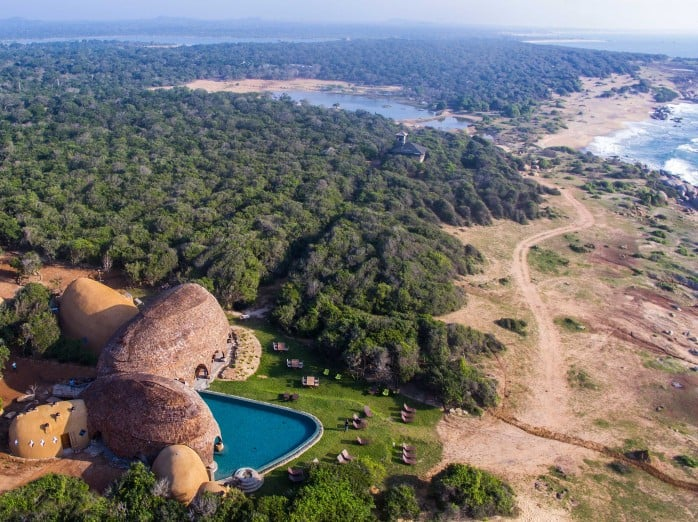
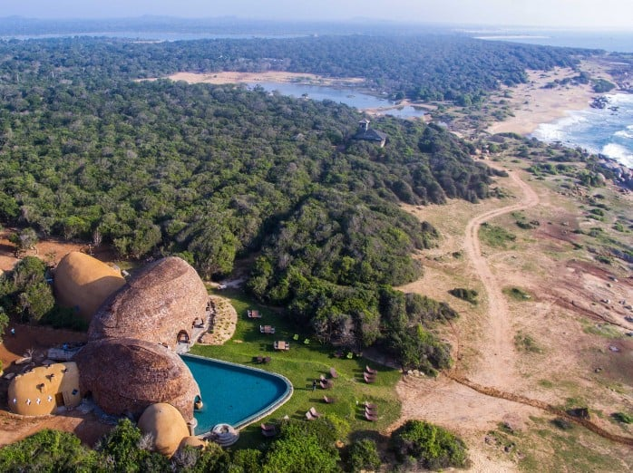

Yala National Park is the most visited and second largest national park in Sri Lanka, bordering the Indian Ocean. The park consists of five blocks, three of which are now open to the public. There are also two adjoining parks, Kumana National Park and Lunugamvehera National Park. Each block has a unique name, for example, Block 1's Palatupana. It is located in the Southern Province and the Uva Province in the southeast of the nation. Situated approximately 300 kilometres (190 miles) away from Colombo, the park spans 979 square kilometres (378 sq mi). Wilpattu, established in 1938, and Yala, established as a wildlife sanctuary in 1900, were Sri Lanka's first two national parks. The park is well-known for its wide range of fauna and plays a significant role in the conservation of aquatic birds, Sri Lankan leopards, and elephants. Yala is surrounded by three animal sanctuaries and six national parks. The largest is the National Park of Lunugamvehera. The park experiences rain primarily during the northeast monsoon due to its location in a semi-arid climatic zone. Yala is home to several different types of ecosystems, including freshwater and marine wetlands, as well as damp monsoon woods. It is among Sri Lanka's seventy Important Bird Areas. Yala is home to 215 different bird species, six of which are native to Sri Lanka. There are 44 creatures that have been documented from the park, and it contains one of the greatest numbers of leopards worldwide.
 



Among Sri Lanka's wildlife preserves, Yala National Park is a gem that welcomes you. Tucked away in the southeast of the island, Yala is renowned for its breathtaking scenery and wide variety of fauna. The provinces of Uva and Southern Sri Lanka are home to Yala National Park. Covering an area of around 978 square kilometres, it is the most popular national park in the country and a haven for nature lover
Biodiversity and Wildlife: When you enter Yala's domain, get ready to see an amazing variety of species. The park is home to some of the most well-known creatures in Sri Lanka, including the timid leopard, the stately elephant, and the comical sloth bear. The beautiful sounds of many bird species fill the air, adding to the park's vibrant tapestry. Yala's diverse flora coexists together with its fauna, creating an attractive habitat that stimulates the senses. Get ready for an immersive experience that will constantly bring you closer to the pulsing core of the natural world